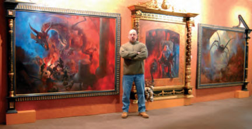

|
© 2021 Festival Art and Books. All rights reserved.  Interview with Paul Raymond Gregory Who are your artistic inspirations for painting, especially when it comes to Tolkien inspired art? Tolkien was very descriptive his world comes alive with every page, the reason I decided to embark on this journey in the first place. I do like the darker elements to Tolkien's world gives more scope for the imagination and possibly a vent for my darker side.
I noted that you say you don't do exact renditions of scenes as for instance Ted Nasmith or Alan Lee might do, but your paintings are personal interpretations of Tolkien's work. What kinds of things within Tolkien's work give you the launch-points for a new work of art? I try as an artist to create a mood in the painting this to me is first and foremost as to not doing exact renditions of scenes I may well create a scene that isn't specific this however for me is still Tolkien's world. The Ride of the Rohirrim is an example of not creating an exact rendition of scene but when seen in context it's obviously from my Tolkien series. Going right back to when you designed LP covers for bands like Uriah Heep, what was it like at that time working on those projects, and do you feel that today's mediums such as the CD lose something from the era of the LP covers? Working with bands then is no different to now it has always been a collaboration and satisfying. As to albums the only true way to see your work is on an LP cover, looking at the cover and listening to the music was then part of the experience. I believe the record industry has been struggling to catch up for many years with new innovations CDs for me were the beginning of the end and the rise of the internet free downloads and piracy has seen a decline in the record labels. That said labels are having to be more creative and I'm delighted to report the LP is back, many of my back catalogue of covers and even recent ones are now in vinyl format, these are more the collectors choice but none the less are being very well received. You use oil on canvas - is that the only medium you paint with, and if so, what makes it so appropriate for this kind of work? I've used several mediums in the past the two I find most appropriate for my style of work are oil and pastel although I haven't used pastel for many years. I don't believe it is more or less appropriate what ever medium you choose, for me it's just a personal choice. Your paintings are quite often very large, fully on the scale of 19th-century history paintings, whereas most modern fantasy art is small-scale. Can you tell us something about both the problems of working on such large pieces, and the potential they offer? When I first started the series it was my intention to have a permanent exhibition on an epic scale, I'd always produced and preferred larger canvases, my first canvas for the Tolkien series was 10' x 6' Feet. I liked the idea of walking into the exhibition and becoming overwhelmed by the scale, at the time of producing the paintings I hadn't envisaged any collaboration with a framer. As to problems larger brushes and more paint, not a flippant comment but for me the only difference it also keeps you fit walking back a forth, I'm sure I walk several miles on the bigger canvases. People have compared the style of your atmospheric paintings to those of Hieronymus Bosch, Breughel, even Turner - do those painters offer artistic windows into the kinds of places you need to explore for Middle earth? I'm flattered by the comparison, Turner has always been in my top ten list of painters, I’m sure Bosch and Breughel have their place in my evolution as an artist as do several others albeit subliminally. One thing that strikes any viewer of your art is the amazing old frames that complement the pictures. I believe you work with John Davies the celebrated framer - how does that work, and what kind of collaboration is involved? How does that enhance the artistic space so created|? As previously mentioned, framing the exhibition was never a consideration for me, Peter Nahum was now buying the work, the first exhibitions with Sotherby's and the Barbican show in London the paintings were all unframed. It was Peter Nahum and John Davies that collaborated to bring this stunning element to the exhibition the first ideas for the frames were sent to me by Peter they looked incredible and I'd no idea how incredible until I saw them for the first time in France. Some of the frames are completely over the top but work to enhance the work, this is not something I can take no credit for, Peter and John's creations add another dimension to the paintings and are artistic creations in there own right. You hold a heavy metal music festival each summer - can you give readers some insight into your interest in that genre of music and involvement in the music festival? I've never been one to turn down a challenge so when some ten years ago I was asked would I like to take part in running a festival I remember saying yes before I even considered how. I won't go through the highs and lows because trust me this is a book in the making all I will say is I love every minute. I'm a big fan of music and fortunate to be old enough to have been around when blues was the great influence on the young bands of the day, Blues rock and metal are the genres that most sum up my particular taste in music. My involvement in the festival is one of founder and director (bloodstock) an award winning festival, now in its tenth year is the UK's biggest open air metal festival. My two daughters who were instrumental in its growth in the early days are now both co directors. Apart from bringing to the UK bands that had never played these shores I'm a big supporter of the next generation of metal and to this end have an unsigned stage at the festival which we know has seen many a good many young bands go on to secure record deals. www.bloodstock.uk.com 13-14-15 August 2010.
I have heard that your series of Tolkien paintings spans over 25 years - what keeps you interested in continuing with it, and do you expect to continue for a long time? 32 years ago saw the completion of my first Tolkien painting. It's difficult to say what keeps my interest after all these years that said there aren't that many canvases for such a great time span I also believe my other interests the festival illustrations and album covers give it a healthy balance. As to how long I expect to continue is not a question I've even considered. One of the names mentioned when your art is talked about is the great Frank Frazetta, the comic book illustrator who produced such iconic work with the works of Edgar Rice Burroughs' John Carter of Mars and Tarzan - how much of an influence is he to your painting? Frazetta was a great illustrator and his recent death a sad loss, I love the apparent ease with which he produced his art, I'm sure the end results didn't come as easy as they appear but as an artist of warriors he's was the man. My only connection with Frazetta is via my album art, he produced 4 albums for the band Molly Hatchet, I've now done seven covers for the band the only similarity is the subject matter as the band wanted to continue the theme I had or have no intention of trying to emulate the great man. You are exhibiting a series of works at the Festival in the Shire - can you tell us more about what we can expect to see? Mark was saying you will have a limited edition print there? Maybe this is where you could mention that?) I think this one best explained by Mark. Can you give our readers your website link so that they can visit your site to see more of the paintings online? There are two websites each link to each other My album art is at www.studio54.co.uk my Tolkien inspired work is at www.paulraymondgregory.com..Hope this gives you enough to work with. Cheers Paul
|
||